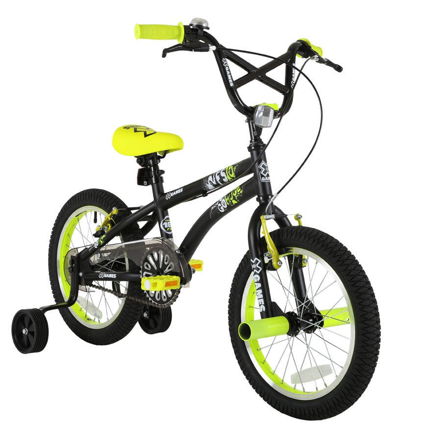
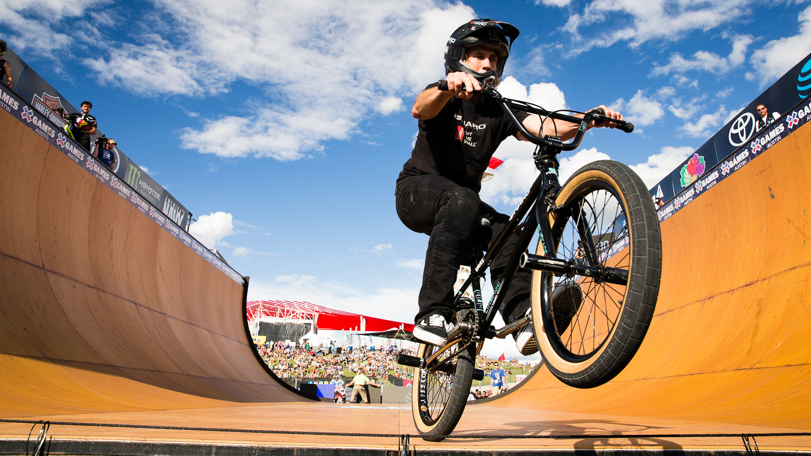

Las bicicletas estilo BMX son el tipo de bicicletas mas sencillas que existen, ya que es un modelo basico que se ofrece en diferentes tamaños y es osiblemente la 1ra bicicleta de todo niño, su sencillez y simplicidad las convierten en una bicicleta facil de usar y mantener ya que estas no utilizan ningun sistema de suspension, cambios y dependiendo el usuario es comun que se utilicen hasta sin frenos, son muy populares entre usuarios que gustan de hacer acrobacias y saltos y hasta existen eventos profesionales al rededor del mundo que congregan a los mejores ciclistas bmx del mundo
Aqui te mostramos como son las bicicletas BMX
 *Si esta es la actividad que deseas realizar, procura usar siempre el equipo de proteccioón necesario para evitar lesiones serias*
Volver apágina principal